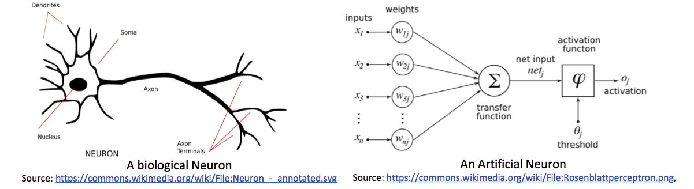
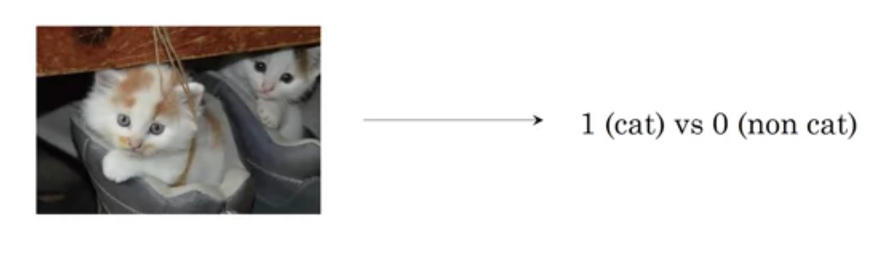
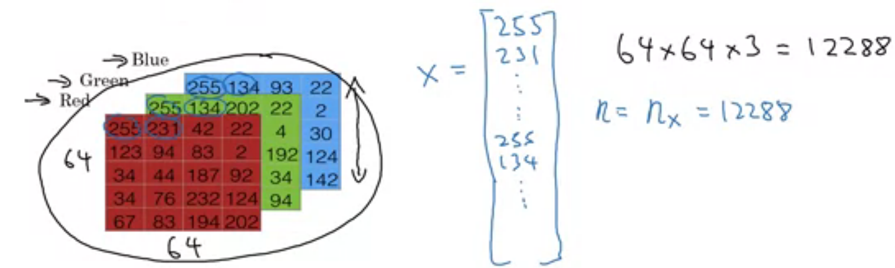
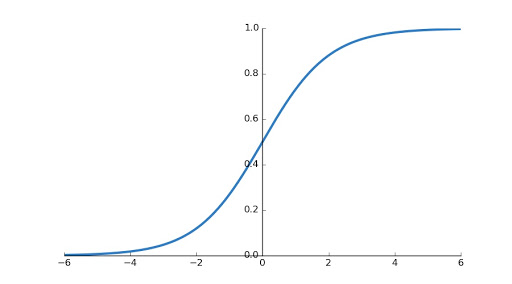
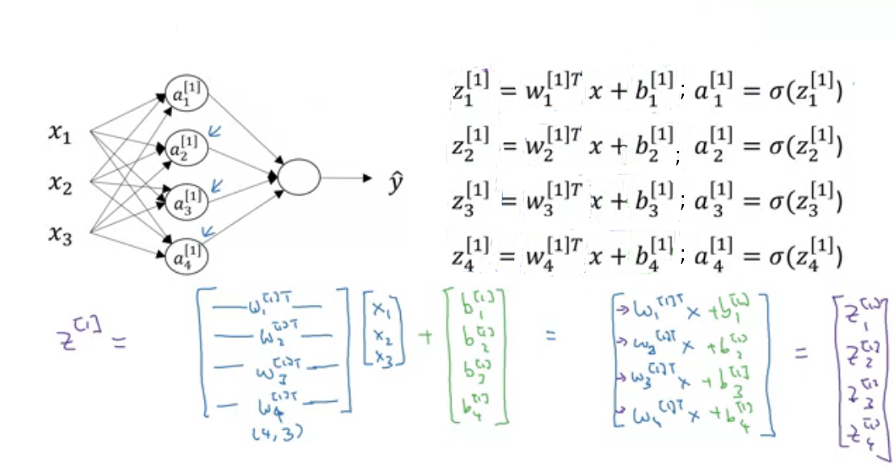
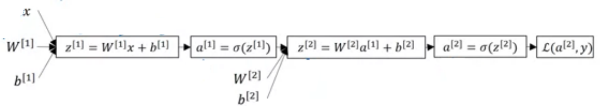
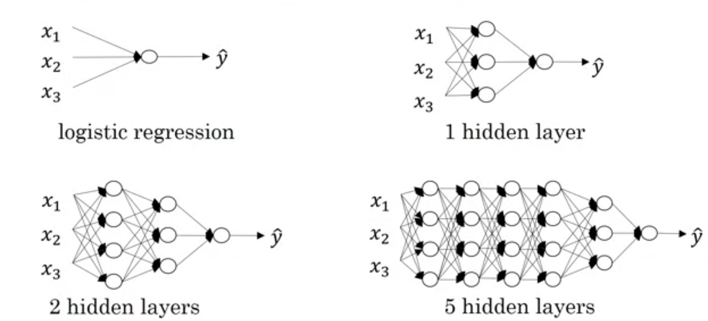
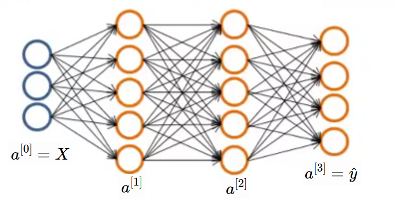
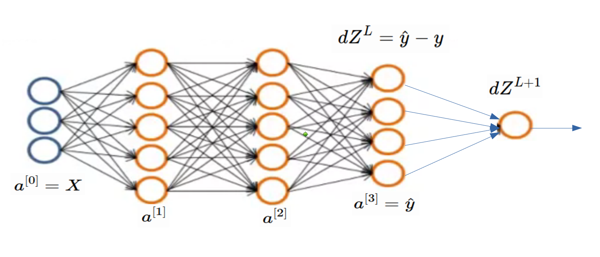
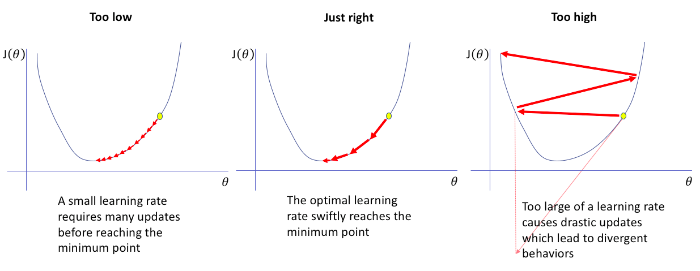

Fully Connected

Artificial Neural Networks are inspired by Human Neural System. In human neural system, axons of one neuron are connected with dendrites of another and they are regulating electric signal by using chemicals. This is higher level working of human neuron. number of these neurons are used for complex decision making. It's just intro üòÉ.
Logistic Regression
Problem
We have to find is there a cat in image or not. This is binary classification because either cat is present or not in image (1 or 0).

Before we start learning logistic regression, lets see how image is stored and presented in computer because we have to work on these images. Images are continuous signals in space but storing and processing continuous signal is too hard üôÅ. So images are discretized and then stored and processed in computers. images are stored in 3D matrix with 3 channels i.e. red, green, blue (RGB).

As shown in above image, images are shored in 3D matrix. But for training on logistic regression, we need vector as a input. So We will roll out this image into long column vector. given image is 64x64x3 size where 64 is height and width of image. Actually it depends on situation. for example, in numpy img.shape gives first dimension as height of image while mentioning resolution of image, we do opposite like 1920x1080.
So the problem: Given a cat picture , we want probability of cat in image i.e. .
Notation
We will see all notation in basic neural network. some of them are not used in logistic regression but we need them as we progress in article.
Sizes
- : number of examples in dataset
- : input size
- : output size
- : Number of hidden units in layer.
- : number of layers in network.
Objects
- is the input matrix
- is the example represented as a column vector
- is the label matrix or actual output while training
- is the output label for the example
- is the weight matrix of layer
- is the bias vector in the layer
- is the predicted output vector. Also denoted by .
Algorithm
Given , we want . As below image, we will give input as rolled image and output will be 1 if cat in image else 0. in image, are weights and is bias. These are learning parameters means we will learn them while training phase.

if we want to explain above image in one line then this line will be like this weighted sum over input is added to bias and whatever we got, pass it to activation function. Here weighted sum means multiply weights to respective input i.e. and add them. Lets consider as a sum of weighted sum of input and bias.
Activation Function
If you are familiar with linear regression then you might saw above image except activation function. In linear regression, we are finding real value i.e. but here we want probability of cat in image then it must be in . And also it introduces non-linearity to the output . We will use sigmoid activation function in this turtorial. There are other activations functions are also available like ReLU, Leaky ReLU, tanh etc.
We need derivative of sigmoid function while sending error backward. So lets find now.
When you plot sigmoid function, you will find graph shown below.

Training
Weights are initialized randomly to eliminate symmetry problem which arises when we initialize weights to zeros. Biases can be initialized to zeros.
Basic steps are 1. Ininitialize weights and biases 2. forward pass means find using input and weights, biases 3. compare with i.e. predicted output with actual output and then backpropagate errors to make changes appropriately in weights and biases.
Lets take example. We have dataset with 10000 () images of with cat and without cat in it. when every image of size rolled out forms 12228 () features long vector. We got input . Now label (Actual Output) for these examples is .
Let's see code for initializing and forward pass.
import numpy as np
# suppose we have imput and output with us.
print(X.shape)
print(Y.shape)
Output
(12228, 10000)
(1, 10000)
# initialize weights and biases
W = np.random.rand(12228, 1) # input * output
b = np.zeros(1,)
# learning rate
alpha = 0.001
# Now forward pass
Z = np.dot(W.T, X) + b
def sigmoid(X):
return 1 / (1 + np.exp(- X))
def inv_sigmoid(X):
return sigmoid(X) * (1-sigmoid(X))
y_hat = sigmoid(Z)
Now time for Back Propagation. But it is too risky to say back propagation because in logistic regression, error is not sent back to another layer (üòÉ Only Single layer). For computing loss in single training example, we will use binary cross entropy loss and we can formulate loss (error) function as
We can also use our loss function used in linear regression but this loss function is non-convex So its too hard to find global minima.
Until now we defined loss function which can tell us that How good a particular example doing? But we want to find How good all examples doing?. For that purpose we need cost function and it can be defined as
Gradient Descent
Now only remaining job is to send loss backward and update weights and biases appropriately. For updating this parameters, we have to find cost w.r.t. weights and biases. Like below
In above equation, is learning rate.
The amount that the weights are updated during training is referred to as the step size or the learning rate. Specifically, the learning rate is a configurable hyperparameter used in the training of neural networks that has a small positive value, often in the range between 0.0 and 1.0.
To find and , we need to expand equation of .
It's time to find gradients w.r.t. weights and biases. currently, call as . and for sake of simplicity, put aside.
Now we will use above 2 equations to find and
Finally done üòá. Time for code.
# Find cost
cost = -(1/m) * (Y*np.log(y_hat)+(1-Y)*np.log(1-y_hat))
dw = (1/m) * np.dot((y_hat - y), X.T)
db = (1/m)* np.sum(y_hat - y, axis=1, keeps_dim=True)
# update w and b
W = W - alpha * dw
b = b - alpha * db
Neural Network
Still now we learned logistic regression and updating parameters in it. Logistic regression unit is also called as neuron in neural network. You can compare both neuron and neural network in below image. Neurons are stacked in 2 dimensional space and all neurons from previous layer are connected to all neurons in current layer.

In above image (b), 2 inputs are given to Hidden layer and these all 5 neurons in hidden unit produces which will pass to output layer. In image, 1 circle means 1 neuron. and (b) has 2 layers (Input is not considered as layer). remember means activations produced by unit in layer.
Forward Propagation

In above image is our in logistic regression. In logistic regression we saw is weight matrix but here we have number of neurons so for each neuron we have weight matrix and represented by where is layer and i is unit(neuron) in that layer. and also separate bias for each neuron . But while implementing, we use vectorization for fast computation. So all weights for neurons is stacked and created a row vector of for each layer. Now weights of layer are . Similarly biases are also stacked and created column vector.
Suppose, We are at layer so previous layer has units and current layer has units then shape of weight matrix of layer will be . and shape of bias matrix will be . I know you are confused because shape of weight matrix in logistic regression is opposite what we are seeing here. To make implementation simple we are doing this. You can use another approach also.

Lets implement in python as shown in above image.
# We already have X and Y with us
# define units list
units = [3,4,1] # input, hidden, output
#initialise weights and biases
W_1 = np.random.rand(units[1],units[0])
b_1 = np.zeros((units[1],1))
W_2 = np.random.rand(units[2],units[1])
b_2 = np.zeros((units[2],1))
# Feed forward
z_1 = np.dot(W_1,X) + b_1
a_1 = sigmoid(z_1)
z_2 = np.dot(W_2,a_1) + b_2
y_hat = sigmoid(z_2) # or a_2
Back Propagation
We already saw in logistic regression that how to update and but for updating and , we need and ; here and are considered as all weights and biases in network. means cost of final prediction. Lets find some more derivatives. But before that, see computation graph for our 2 layer neural network.

From above graph, we can find below equations. You may think that Why this equations re-arranged like that? Now these equations can work with multiple examples at a time.
Now we can find and
# Some code copied from logistic regression
# Find cost
cost = np.sum(-(1/m) * (Y*np.log(y_hat)+(1-Y)*np.log(1-y_hat)))
dZ_2 = np.array(y_hat - y)
dw2 = (1/m) * np.dot(dZ_2, a_1.T)
db2 = (1/m)* np.sum(dZ_2, axis=1, keepdims=True)
dZ_1 = np.dot(W_2.T,dZ_2) * inv_sigmoid(z_1)
dw1 = (1/m) * np.dot(dZ_1, a_1.T)
db1 = (1/m)* np.sum(dZ_1, axis=1, keepdims=True)
# Update weights
W_1 = W_1 - alpha * dw1
b_1 = b_1 - alpha * db1
W_2 = W_2 - alpha * dw2
b_2 = b_2 - alpha * db2
Deep L-layer Neural Network
As shown in below image, first network (actually not network) is one neuron or logistic regression unit or perceptron. and are also considered as shallow. We don't have any predefined boundary which can say What depth of network required to become deep network?. We can say last network may be deep.

We saw is number of neurons in layer. We will implement neural network in above image in this article.
Forward Propagation
Output from layer is sum of weighted sum of output of previous layer and bias. We saw this in previous article. Now generalize this.
In above equations, means activation function used in that particular layer. and means total number of layers excluding input. When then
Let's initialize weights and biases. We will use units (python list) to store units in each layer. units[0] will be input size . We will use dictionary so that no need to use different variable names.
# import required libraries
import numpy as np
# create some data
m = 2 # no of samples
X = np.random.rand(3,m)
Y = np.random.rand(1,m)
alpha = 0.01 # learning rate
# units in each layer
# first number (3) is input dimension
units = [3, 4, 4, 4, 4, 3, 1]
# Total layers
L = len(units) - 1
# parameter dictionary
parameters = dict()
for layer in range(1, L+1):
parameters['W' + str(layer)] = np.random.rand(units[layer],units[layer-1])
parameters['b' + str(layer)] = np.zeros((units[layer],1))
Lets find predicted output using above generic equations.
cache = dict()
cache['a0'] = X
for layer in range(1, L+1):
cache['Z' + str(layer)] = np.dot(parameters['W' + str(layer)],cache['a' + str(layer-1)]) + parameters['b' + str(layer)]
cache['a' + str(layer)] = sigmoid(cache['Z' + str(layer)])
cache['a' + str(L)] will be the predicted output. still now, we completed forward pass of neural network. Now the important part i.e. backpropagation for updating learnable parameters.
Backward Pass
As we want generic backpropagation steps, we need to define some notations
- : error in cost function with respect to
- : error in cost function with respect to
- : error in cost function with respect to
- : error in cost function with respect to
- : derivative of activation function used in layer i.e.
For backword pass, we will take some equations from our previous article. I am pasting these equations down without any proof. If you want to check proof, visit previous article.
In above equation, means . Now to backpropagate error to previous layers we will copy-paste following equations from previous article.
Now we need equations for updating weights and bias. What you think... Let's copy them also
In this article, we will use sigmoid activation function all the time. and we already defined it and it's derivative in previous article. So we will call it directly. Now lets see code for backpropagation
y_hat = cache['a' + str(L)]
cost = np.sum(-(1/m) * (Y*np.log(y_hat)+(1-Y)*np.log(1-y_hat)))
cache['dZ' + str(L)] = (1/m) * (y_hat - Y)
cache['dW' + str(L)] = np.dot(cache['dZ' + str(L)], cache['a' + str(L-1)].T)
cache['db' + str(L)] = np.sum(cache['dZ' + str(L)], axis=1, keepdims=True)
for layer in range(L-1,0,-1):
cache['dZ' + str(layer)] = np.dot(parameters['W' + str(layer+1)].T, cache['dZ' + str(layer+1)]) * inv_sigmoid(cache['Z' + str(layer)])
cache['dW' + str(layer)] = np.dot(cache['dZ' + str(layer)], cache['a' + str(layer-1)].T)
cache['db' + str(layer)] = np.sum(cache['dZ' + str(layer)], axis=1, keepdims=True)
Now time to update weights and biases using learning rate
for layer in range(1, L+1):
parameters['W' + str(layer)] = parameters['W' + str(layer)] - alpha * cache['dW' + str(layer)]
parameters['b' + str(layer)] = parameters['b' + str(layer)] - alpha * cache['db' + str(layer)]
Code
Now lets see final code in action. Copy this code in some python file and run it. You will find that cost is decreasing as iterations increases.
# import required libraries
import numpy as np
# create some data
m = 2 # no of samples
X = np.random.rand(3,m)
Y = np.random.rand(1,m)
alpha = 0.01 # learning rate
# units in each layer
# first number (3) is input dimension
units = [3, 4, 4, 4, 4, 3, 1]
# Total layers
L = len(units) - 1
# parameter dictionary
parameters = dict()
for layer in range(1, L+1):
parameters['W' + str(layer)] = np.random.rand(units[layer],units[layer-1])
parameters['b' + str(layer)] = np.zeros((units[layer],1))
def sigmoid(X):
return 1 / (1 + np.exp(- X))
def inv_sigmoid(X):
return sigmoid(X) * (1-sigmoid(X))
cache = dict()
cache['a0'] = X
epochs = 100
for epoch in len(epochs):
for layer in range(1, L+1):
cache['Z' + str(layer)] = np.dot(parameters['W' + str(layer)],cache['a' + str(layer-1)]) + parameters['b' + str(layer)]
cache['a' + str(layer)] = sigmoid(cache['Z' + str(layer)])
y_hat = cache['a' + str(L)]
cost = np.sum(-(1/m) * (Y*np.log(y_hat)+(1-Y)*np.log(1-y_hat)))
print(cost)
cache['dZ' + str(L)] = (1/m) * (y_hat - Y)
cache['dW' + str(L)] = np.dot(cache['dZ' + str(L)], cache['a' + str(L-1)].T)
cache['db' + str(L)] = np.sum(cache['dZ' + str(L)], axis=1, keepdims=True)
for layer in range(L-1,0,-1):
cache['dZ' + str(layer)] = np.dot(parameters['W' + str(layer+1)].T, cache['dZ' + str(layer+1)]) * inv_sigmoid(cache['Z' + str(layer)])
cache['dW' + str(layer)] = np.dot(cache['dZ' + str(layer)], cache['a' + str(layer-1)].T)
cache['db' + str(layer)] = np.sum(cache['dZ' + str(layer)], axis=1, keepdims=True)
for layer in range(1, L+1):
parameters['W' + str(layer)] = parameters['W' + str(layer)] - alpha * cache['dW' + str(layer)]
parameters['b' + str(layer)] = parameters['b' + str(layer)] - alpha * cache['db' + str(layer)]
full code can be found 
Multiclass Classification
Still now we only saw binary classification problems (either 1 or 0). In this article, We will see multiclass (means one of the many classes) problem. Lets see directly what is MNIST handwritten digit dataset. It contains 60000 images of handwritten digits (0-9). Total 10 classes üôÑ i.e. multiclass classification. all images are grayscale and 28x28 in size. You can check some samples in below image.
 Samples from MNIST Dataset
Samples from MNIST Dataset
Before that take simple network with multiclass output. 4 class neural network is shown in below image. Here, shape of will be (4, m) where m is number of examples. Generally shape of is (K, m) where K is number of classes.
 Multiclass Network Sample Example
Lets revise some terminologies. will be number of samples in dataset and will be size of input then will be the input matrix size. And will be output size then will be the output matrix size. As per our above neural network, label will be one of the following column vector because only 1 out of 4 class will be present for a sample in our example. for our convenience, suppose cat, dog, frog and rabbit these are the classes. So is the cat class. This kind of encoding is called as One Hot Encoding because for some particular sample only one value is hot (1) and other are cool (0).
Initialize Variables
In general, our data will look like the following matrices. is input and is output. in below equation, is number of classes and we use and interchangebly.
Before we jump into forward pass, lets create dataset. We will create random data and at last check whether cost is decreasing or not. If cost is decreasing after each epoch then we can say that our model is working fine.
import numpy as np
# set seed
np.random.seed(95)
# number of examples in dataset
m = 6
# number of classes
K = 4
# input shape
n_x = 3
# input (n_x, m)
X = np.random.rand(n_x, m)
# hypothetical random labels
labels = np.random.randint(K, size=m)
# convert to one hot encoded
Y = np.zeros((4,6))
for i in range(m):
Y[labels[i]][i] = 1
print("X", X)
print("Labels",labels)
print("Y",Y)
Output
X:
[[0.22880349 0.19068802 0.88635967 0.7189259 0.53298338 0.8694621 ]
[0.72423768 0.48208699 0.7560772 0.97473999 0.5083671 0.95849135]
[0.49426336 0.51716733 0.34406231 0.96975023 0.25608847 0.40327522]]
Labels: [2 1 3 0 0 3]
Y:
[[0. 0. 0. 1. 1. 0.]
[0. 1. 0. 0. 0. 0.]
[1. 0. 0. 0. 0. 0.]
[0. 0. 1. 0. 0. 1.]]
Now time to randomly intialize weights and biases to 0. We will create units list which tells us, How may neurons in each layers?
# units in each layer
# first number (3) is input dimension
units = [3, 5, 5, 4]
# Total layers except input
L = len(units) - 1
# parameter dictionary
parameters = dict()
for layer in range(1, L+1):
parameters['W' + str(layer)] = np.random.rand(units[layer],units[layer-1])
parameters['b' + str(layer)] = np.zeros((units[layer],1))
Forward Pass
We saw in forward pass in previous article and no change is required for feed forward. So let's copy equations from previous article. Normally people uses Softmax activation function at last layer but for simplicity, we will continue using Sigmoid.
Lets write code for forward pass in python. We will use our generic code from previous article.
cache = dict()
cache['a0'] = X
for layer in range(1, L+1):
cache['Z' + str(layer)] = np.dot(parameters['W' + str(layer)],cache['a' + str(layer-1)]) + parameters['b' + str(layer)]
cache['a' + str(layer)] = sigmoid(cache['Z' + str(layer)])
Backward Pass
Still what we saw is from previous article. Now the most important part i.e. Loss Function & Cost Function. We already saw difference between loss function and cost function in article 1 of this series. We will use Binary Cross Entropy generalized for classes as our loss function. The formula for it is same as Binary Cross Entropy extended for multiple classes. Below, second equation is vectorized version of first equation.
So the cost function will be the addition of all losses over all examples. So cost function will be
Now its time of finding derivative of loss function. Before that check below image so that you can compare binary classification problem with multiclass classification. When we find , we are done. As per below image, finding is tricky part and all gradient in layers before it can be found using our regular (generic) code. Check previous article.

In below equations, & are representing all weights and biases of network.
Above equation can further vectorized for speedup. I will start another series on High Performance Computing as early as possible. In that article, we will see advantages of vectorization.
Let's implement backpropagation. You may say that both codes from previous article and this article are same. it's because vectorized equation for is same for both binary classification and multiclass classification. Remember our example with random data doesn't make any sense because it don't have any pattern. We care about cost is decreasing or not?.
def cost(y,y_hat):
return -np.sum(y*np.log(y_hat) + (1-y)*(np.log(1-y_hat)))
y_hat = cache['a' + str(L)]
cost_ = cost(y,y_hat)
cache['dZ' + str(L)] = (1/m) * (y_hat - Y)
cache['dW' + str(L)] = np.dot(cache['dZ' + str(L)], cache['a' + str(L-1)].T)
cache['db' + str(L)] = np.sum(cache['dZ' + str(L)], axis=1, keepdims=True)
for layer in range(L-1,0,-1):
cache['dZ' + str(layer)] = np.dot(parameters['W' + str(layer+1)].T, cache['dZ' + str(layer+1)]) * inv_sigmoid(cache['Z' + str(layer)])
cache['dW' + str(layer)] = np.dot(cache['dZ' + str(layer)], cache['a' + str(layer-1)].T)
cache['db' + str(layer)] = np.sum(cache['dZ' + str(layer)], axis=1, keepdims=True)
MNIST Handwritten Digit Recognition
In above random data example, data and output doesn't make any sense so we will see real life example of handwritten digit classification. You already saw about dataset at start of this article.
Load Dataset
Now we will load data. Link to dataset is also given in references and code section.
import numpy as np
np.random.seed(95)
# Load CSV File
data = np.genfromtxt("mnist_train.csv",delimiter = ',')
# first column is labels
y = data[:,0]
# rest 784 columns are features / pixel values.
X = data[:,1:785].T
# Some constants
K = 10 # No of classes
alpha = 0.1 # Learning rate
m = 60000 # No of examples
# convert to one hot encoded
Y = np.zeros((K,m))
for i in range(m):
Y[int(y[i]),i] = 1
# print shape of input and output/label
print('Shape of X:',X.shape)
print('Shape of y:',y.shape)
print('Shape of Y:',Y.shape)
Output
Shape of X: (784, 60000)
Shape of y: (60000,)
Shape of Y: (10, 60000)
Initialize Weights and Biases
# units in each layer
# first number (784) is input dimension
units = [784, 128, 64, 10]
# Total layers
L = len(units) - 1
# parameter dictionary
parameters = dict()
for layer in range(1, L+1):
parameters['W' + str(layer)] = np.random.normal(0,1,(units[layer],units[layer-1]))
parameters['b' + str(layer)] = np.zeros((units[layer],1))
Define Sigmoid and Derivative of Sigmoid Function
def sigmoid(X):
return 1 / (1 + np.exp(- X))
def inv_sigmoid(X):
return sigmoid(X) * (1-sigmoid(X))
Forward Pass
cache = dict()
def forward_pass(X):
cache['a0'] = X
for layer in range(1, L+1):
cache['Z' + str(layer)] = np.dot(parameters['W' + str(layer)],cache['a' + str(layer-1)]) + parameters['b' + str(layer)]
cache['a' + str(layer)] = sigmoid(cache['Z' + str(layer)])
Backward Pass
We will use batch size of 10 samples because of that you will find instead of (All data at a time).
def cost(y,y_hat):
return -np.sum(y*np.log(y_hat) + (1-y)*(np.log(1-y_hat)))
def back_prop(Y):
y_hat = cache['a' + str(L)]
cache['dZ' + str(L)] = (1/10)*(y_hat - Y)
cache['dW' + str(L)] = np.dot(cache['dZ' + str(L)], cache['a' + str(L-1)].T)
cache['db' + str(L)] = np.sum(cache['dZ' + str(L)], axis=1, keepdims=True)
for layer in range(L-1,0,-1):
cache['dZ' + str(layer)] = np.dot(parameters['W' + str(layer+1)].T, cache['dZ' + str(layer+1)]) * inv_sigmoid(cache['Z' + str(layer)])
cache['dW' + str(layer)] = np.dot(cache['dZ' + str(layer)], cache['a' + str(layer-1)].T)
cache['db' + str(layer)] = np.sum(cache['dZ' + str(layer)], axis=1, keepdims=True)
Update Weights and Biases
def update_weights():
for layer in range(1, L+1):
parameters['W' + str(layer)] = parameters['W' + str(layer)] - alpha * cache['dW' + str(layer)]
parameters['b' + str(layer)] = parameters['b' + str(layer)] - alpha * cache['db' + str(layer)]
Start Training
epoch = 30
for i in range(epoch):
cost_tot = 0
for j in range(6000):
forward_pass(X[:,j*10:j*10+10])
cost_tot += cost(Y[:,j*10:j*10+10],cache['a' + str(L)])
back_prop(Y[:,j*10:j*10+10])
update_weights()
if i%5 == 0:
print('epoch ',i,' ',cost_tot)
Output
epoch 0 119429.14804683565
epoch 5 102128.37509302271
epoch 10 90151.75500527128
epoch 15 86009.41961305328
epoch 20 88218.24177992699
epoch 25 90432.20939203199
epoch 30 92974.92502732007
epoch 35 93986.34837736617
epoch 40 92380.93127681084
epoch 45 90417.26686598927
epoch 50 101933.2601655828
Above output shows, cost is decrasing still epoch but for epoch, it is increased. Reason of this is Learning Rate. If learning rate is too small, training takes more time and if learning rate is too high then what happens you already experienced. Finding not too high, not too low learning rate is difficult problem for particular application. We will see another article with heading Hyper parameter tunning tricks in near future.
 Source: jeremyjordan.me
Check Some Samples
forward_pass(X[:,0:10])
# axis 0 means max columnwise
# axis 1 means max rowwise
predicted = cache['a3'].argmax(axis=0)
actual = Y[:,:10].argmax(axis=0)
print('Actual Labels: ', actual)
print('Predicted Labels: ',predicted)
Output
Actual Labels: [5 0 4 1 9 2 1 3 1 4]
Predicted Labels: [3 0 4 1 4 6 1 3 1 4]
References and Code
[1] Dataset : handwritten digit recognition
You can find code (MNIST)
You can find code (Random Data)